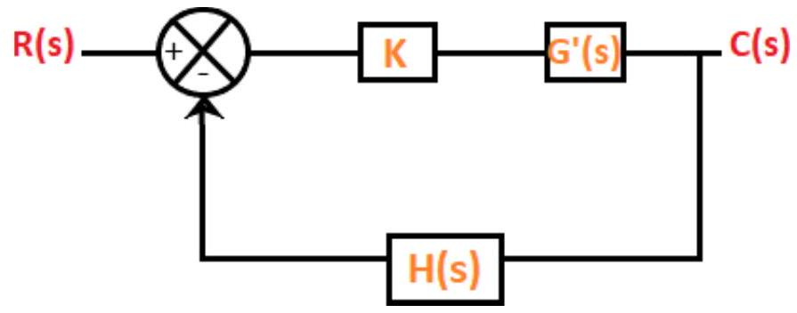
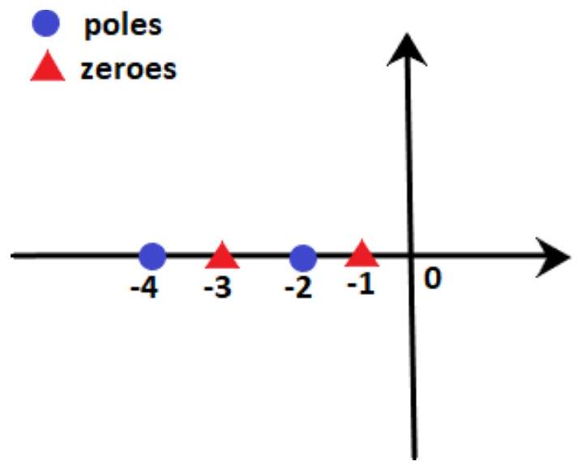
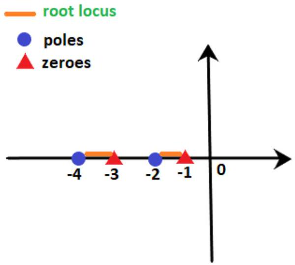
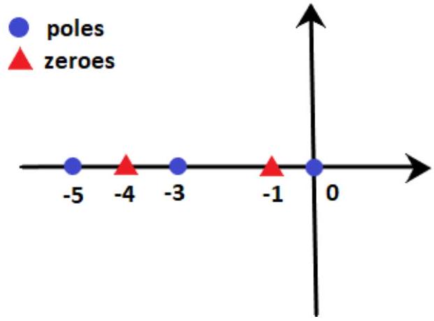
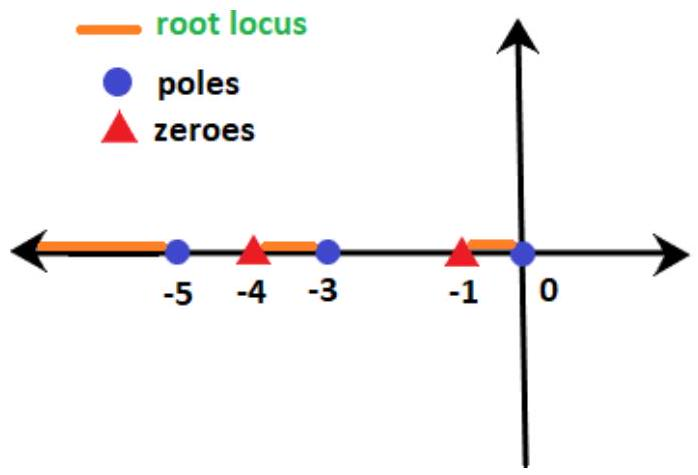

Unit-7: Stability Concept & Root Locus Method
Basic concepts of root locus:
In the previous sections, we have studies that the stability of a system. It depends on the location of the roots of the characteristic equation. We can also say that the stability of the system depends on the location of closed-loop poles. Such knowledge of the movement of the poles in the s-plane when the parameters are varied is important. The minor changes in the parameters can greatly help in the system designing. The nature of the system's transient response is closely related to the location of the poles in the s-plane.
We have also studied the Routh Hurwitz criteria that describe the stability of the algebraic equation. If any of the term in the first column of the Roth table possesses a sign change, the system tends to become unstable.
The root locus method was introduced by W.R Evans in 1948. Root locus is a graphical method in which the movement of poles in the s-plane can be located when a specific parameter is varied from 0 to infinity. The parameter assumed to be varied is generally the gain of the system.
Consider the below closed loop system.
The equation of a closed loop system is given by:
Where,
G(s) is the gain of the transfer function
H(s) is the feedback gain
In the case of root locus, the gain K is also assumed as part of the closed-loop system. K is known as system gain or the gain in the forward path. The characteristic equation after including the forward gain can be represented as:
Where,
K Variation and Locus Types
When the system includes the variable parameter K, the roots of the closed loop system are now dependent on the values of 'K.'
The value of 'K' variable can vary in two cases, as shown below:
- $-\infty$ to $+\infty$
- $0$ to $+\infty$
In the first case, for every different value (integer or decimal) of K, we will get separate set of locations of the roots. If all such locations are joined, the resulting plot is defined as the root locus. We can also define root locus as the locus of the closed loop poles obtained when the system gain 'K' is varied from -infinity to infinity.
When the K varies from zero to infinity, the plot is called the direct root locus. If the system gain 'K' varies from -infinity to zero, the plot thus obtained is known as inverse root locus. The gain K is generally assumed from zero to infinity unless specially stated.
Rules of root locus
Here, we will discuss the six basic rules required to plot a root locus. We will also discuss an example that will help us to implement the rules easily.
Rule Number 1
We know that the root of the equation can be real or complex or a combination of both. The root locus is generally symmetric about the real axis. Thus, the plot needs to be symmetric about the real axis of the s-plane.
Rule Number 2
The transfer function of the system is generally represented by G(s)H(s), where H(s) is the feedback path. Let us suppose the open-loop transfer function to be the same G(s)H(s) and the poles and zeroes are P and Z.
There are two conditions where the poles can be greater than the number of zeroes, or the number of zeroes can be greater than the number of poles in the given characteristic equation.
Let the number of branches in the root locus is N. Both the cases arise when we plot the root locus. The default conditions are given for each case that helps in determining the number of branches terminating or approaching infinity.
Case 1: P > Z
In the above case, we assume that the number of branches in the root locus will equal the number of open-loop poles. It is because the numbers of poles are greater here.
(N = P)
Branches, in this case, will start from the location of the open-loop poles. Here, out of a number of branches at P, the Z number of branches will terminate at the location of open-loop zeroes. The remaining branches (P - Z) will approach infinity.
For example,
Let P = 3, and Z = 1
Then,
The number of root locus branches = 3 = no. of poles
P - Z = 3 - 1 = 2
It means that 3 branches will start from the location of open loop poles
No. of branches terminating at the open loop zero location = 1
No. of branches approaching to infinity = P - Z = 2
Case 2: Z > P
In the above case, we assume that the number of branches in the root locus will be equal to the number of open loop zeroes. It is because the numbers of zeroes are greater here. (N = Z)
Branches in this case will terminate at the finite location of the open loop zeroes. Here, out of number of branches at Z, the P number of branches will start at the location of open loop poles. The remaining branches (Z - P) will approach to finite zeroes originating from the infinity.
For example,
Let P = 1, and Z = 3
Then,
The number of root locus branches = 3 = no. of zeroes
Z - P = 3 - 1 = 2
It means that 1 branch will start from the location of open loop poles
No. of branches terminating at the finite open loop pole location = 3 = all the root locus branches
No. of branches originating from infinity = Z - P = 2
Rule Number 3
A point on the root locus is said to exist if the sum of the open loop poles and zeroes on the real axis towards the right hand side is odd with respect to that point.
For example,
Let poles be -2 and -4, and zeroes are -1 and -3. We need to find that points -2.2 and -3.4 lies on the root locus or not.
We know that -2.2 lies between -2 and -3, while point -3.4 lies between -3 and -4.
We know that -2.2 lie between -2 and -3, while point -3.4 lies between -3 and -4.
Point -2.2: At point -2.2, the sum of poles and zeroes on the right-hand side is 2, i.e. 1 pole (at -2) and 1 zero (at -1). It means that the sum is even. According to rule number 3, the sum should be odd. Hence, point -2.2 does not lie on the root locus. We can also say that any point between -2 and -3 will not lie on the root locus.
Point -3.4: At point -3.4, the sum of poles and zeroes on the right-hand side is 3, i.e. 1 pole (at -2) and 2 zeroes (at -1, -3). It means that the sum is odd. According to rule number 3, the sum should be odd. Hence, point -3.4 lie on the root locus. We can also say that any point between -3 and -4 will lie on the root locus.
The area of the root locus between the points is shown below:
Here, orange line represents the area where root locus lies.
Let's consider an example for better understanding.
Example: $G(s)H(s) = K(s + 1)(s + 4)/ s(s + 3)(s + 5)$. Find on which sections of the real axis, the root locus exists.
Solution: We know that the denominator signifies the poles, and the numerator signifies the zeroes. Thus, 0, -3, and -5 are the poles, and -1 and -4 are the zeroes per the given transfer function. It means that there are 3 poles and 2 zeroes.
These poles and zeroes on the real axis will appear as:
According to rule number 3,
- The sections between 0 and -1 (for example, point -0.4) contain only one pole (at 0) and no zeroes on the right-hand side. It means that the sum is odd (i.e. 1). So, it exists on the root locus.
- The sections between -1 and -3 (for example, point -2.1) contain only one pole (at 0) and one zero (at -1) on the right-hand side. It means that the sum of poles and zeroes is even (i.e. 2). So, it does not exist on the root locus.
- The sections between -3 and -4 (for example, point -3.5) contain two poles (at 0, -3) and one zero (at -1) on the right-hand side. It means that the sum is odd (i.e. 3). So, it exists on the root locus.
- The sections between -4 and -5 (for example, point -4.3) contain two poles (at 0, -3) and two zeroes (at -1, -4) on the right-hand side. It means that the sum of poles and zeroes is even (i.e. 4). So, it does not exist on the root locus.
- The sections greater than -5 (i.e., to the left of -5, for example, point -8.6) contain three poles (at 0, -3, -5) and two zeroes (at -1, -4) on the right-hand side. It means that the sum is odd (i.e. 5). So, it exists on the root locus.
Thus, the line marked with orange depicts the sections where the root locus exists. It is shown below:
Rule Number 4
We have already discussed that (P - Z) provides the number of branches approaching infinity for the given transfer function. The information about such branches approaching infinity is defined under rule number 4, known as asymptotes. The angle of such asymptotes is given by:
Where,
$q = 0, 1, 2, 3, 4 ... (P - Z - 1)$
These are always symmetric about the real axis.
Rule Number 5
Rule number 4 describes the guidelines or information about the branches approaching infinity, known as the asymptotes. But, the angles are insufficient to plot the root locus, and the location of such branches in the s-plane is equally important, defined by rule number 5.
Centroid is a point where the asymptotes intersect at a common point on the real axis. It can be calculated as:
Note: The value of the centroid is always real, which can be positive or negative. It can be a part of root locus or sometimes not.
Rule Number 6
The last rule is the breakaway point. It is also a point on the root locus where multiple roots of the given equation occurs. It is calculated for a specific value of system gain K.
Or
It can be defined as a point on the root locus where two or more roots occur for a particular value of K.
The root locus branches always leave breakaway points at an angle of $180^\circ/n$.
Where,
N = number of branches approaching at the breakaway point.
The value of the angle can be positive or negative.
Let's discuss some predictions about the existence of the breakaway points:
- There exists atleast one breakaway point between the adjacent placed poles if the section between the two poles lies on the root locus.
For example,
The above transfer function has two poles at 0 and -3. According to rule number 3, the point on the section between 0 and -3 (for example, point -2.2) has one pole (at 0) and no zero on the right-hand side. It signifies that the sum of zeroes and poles is 1, i.e. odd. Thus, the section between 0 and -3 exists of the root locus.
Hence, there must exist a minimum of one breakaway point in between them.